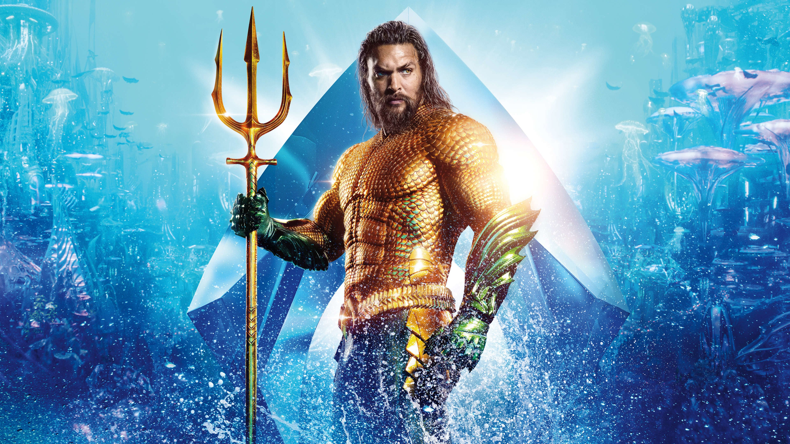

Season 1 - "The Return of the Flash"
E01 - Pilot
E02 - Fastest Man Alive
E03 - Things You Can't Outrun
E04 - Going Rogue
Season 2 - "Finding the Lost Chapter"
E01 - The Man Who Saved Central City
E02 - Flash of Two Worlds
E03 - Family of Rogues
E04 - The Fury of Firestorm
Season 3 - "Faster Than Lightning"
Season 4 - "Can't Look Back"
Season 5 - "Roadblocks"

Aquaman
Availabity:
Unavailable
Request Status:
Unrequested
Content Type:
Movie
In Cinemas:
December 2018
Genres:
Fantasy, Adventure
Score:
6.3 / 10
Once home to the most advanced civilization on Earth, the city of Atlantis is now an underwater kingdom ruled by the power-hungry King Orm. With a vast army at his disposal, Orm plans to conquer the
remaining oceanic people -- and then the surface world. Standing in his way is Aquaman, Orm's half-human, half-Atlantean brother and true heir to the throne. With help from royal counselor Vulko, must retrieve the legendary Trident of
Atlan and embrace his destiny as protector of the deep.

The Flash (2018)
Availabity:
Partially Available
Request Status:
Requested
Content Type:
TV Show
Premerie:
October 2014
Genres:
Drama, Sci-Fi & Fantasy
Score:
6.7 / 10
After a particle accelerator causes a freak storm, CSI Investigator Barry Allen is struck by lightning and falls into a coma. Months later he awakens with the power of super speed, granting him the ability
to move through Central City like an unseen guardian angel. Though initially excited by his newfound powers, Barry is shocked to discover he is not the only "meta-human" who was created in the wake of the accelerator explosion -- and
not everyone is using their new powers for good. Barry partners with S.T.A.R. Labs and dedicates his life to...

Kiiara - Low Kii Savage
Track #
Artist(s)
Title
1
Kiiara
Gold
2
Kiiara
Feels
3
Kiiara
Tennessee
4
Kiiara
Intention
5
Kiiara
Say Anymore
6
Kiiara
Hang up tha phone
username

VIEW COLLECTION
Status
Released
Availabity
Unavailable
Request Status
Unrequested
Content Type
Movie
Genres
ACTION
FANTASY
ADVENTURE
In Cinemas
December 21, 2018
Digital Release
March 5, 2019
Physical Release
March 26, 2019
Language
English
Runtime
2h 23m
Budget
$160,000,000.00
Revenue
$1,096,490,832.00
Tags
DC COMICS
ATLANTIS
HALF-BROTHER
SUPERHERO
BASED ON COMIC
ROYALTY
SHARK
DURINGCREDITSSTINGER
DC EXTENDED UNIVERSE
Aquaman (2018)
Summary
Once home to the most advanced civilization on Earth, the city of Atlantis is now an underwater kingdom ruled by the power-hungry King Orm. With a vast army at his disposal, Orm plans to conquer the
remaining oceanic people -- and then the surface world. Standing in his way is Aquaman, Orm's half-human, half-Atlantean brother and true heir to the throne. With help from royal counselor Vulko, Aquaman must retrieve the legendary
Trident of Atlan and embrace his destiny as protector of the deep.
"
I just came back home from watching Aquaman on the IMAX theater in Balexert in Geneva and thought that I should write something up while it’s still fresh in my mind. Something that happens all too
rarely. I have to say that, overall, I had quite a blast watching this movie. It is indeed a good superhero and special effects extravaganza. In addition it is quite beautiful. A lot of the underwater scenes are very pleasing on
the eye indeed. I am quite happy that I managed to drag my ass over to a theater and watch it on a IMAX screen. Some of the hype around it is perhaps a bit too much though.... read the rest. "
- Per Gunnar Jonsson
"
Arthur Curry (Jason Momoa) lives with his father on the Maine Coast, a caretaker of a lighthouse. With the mentorship of Vulko (Willem Dafoe) and the revelations of Mera (Amber Heard) he discovers
that he is the half-breed heir to the underwater kingdom of Atlantis. As the rightful successor to the throne, he must tangle with his brother Orm (Patrick Wilson) to save the surface world from destruction. Meanwhile Black Manta
(Yahya Abdul-Mateen II) seeks vengeance on Arthur for the death of his father. "
- Wuchak
"
Doesn't hold a candle to Wonder Woman, but tall-buildings worth of leaps (and bounds) better than everything else that's come out of the DCIThoughtSheWasWithU. It's weirdly kind of... The nicest?
Of these movies? Which is not the kind of direction you would think a film in this series would go based on how it started, but Jason Momoa is just charismatic as Hell, and Aquaman leans on that a lot. "
- Gimly
Reccomendations

Violet Evergarden
The Great War finally came to an end after four long years of conflict; fractured in two, the continent of Telesis slowly began to flourish once again. Caught up in the bloodshed was
Violet Evergarden, a young girl raised for the sole purpose of decimating enemy lines. Hospitalized and maimed in a bloody skirmish during the War's final leg, she was left with only words from the person she held dearest, but
with no understanding of their meaning.
Violet Evergarden
The Great War finally came to an end after four long years of conflict; fractured in two, the continent of Telesis slowly began to flourish once again. Caught up in the bloodshed was
Violet Evergarden, a young girl raised for the sole purpose of decimating enemy lines. Hospitalized and maimed in a bloody skirmish during the War's final leg, she was left with only words from the person she held dearest, but
with no understanding of their meaning.
Violet Evergarden
The Great War finally came to an end after four long years of conflict; fractured in two, the continent of Telesis slowly began to flourish once again. Caught up in the bloodshed was
Violet Evergarden, a young girl raised for the sole purpose of decimating enemy lines. Hospitalized and maimed in a bloody skirmish during the War's final leg, she was left with only words from the person she held dearest, but
with no understanding of their meaning.
Violet Evergarden
The Great War finally came to an end after four long years of conflict; fractured in two, the continent of Telesis slowly began to flourish once again. Caught up in the bloodshed was
Violet Evergarden, a young girl raised for the sole purpose of decimating enemy lines. Hospitalized and maimed in a bloody skirmish during the War's final leg, she was left with only words from the person she held dearest, but
with no understanding of their meaning.
Violet Evergarden
The Great War finally came to an end after four long years of conflict; fractured in two, the continent of Telesis slowly began to flourish once again. Caught up in the bloodshed was
Violet Evergarden, a young girl raised for the sole purpose of decimating enemy lines. Hospitalized and maimed in a bloody skirmish during the War's final leg, she was left with only words from the person she held dearest, but
with no understanding of their meaning.
Violet Evergarden
The Great War finally came to an end after four long years of conflict; fractured in two, the continent of Telesis slowly began to flourish once again. Caught up in the bloodshed was
Violet Evergarden, a young girl raised for the sole purpose of decimating enemy lines. Hospitalized and maimed in a bloody skirmish during the War's final leg, she was left with only words from the person she held dearest, but
with no understanding of their meaning.
Violet Evergarden
The Great War finally came to an end after four long years of conflict; fractured in two, the continent of Telesis slowly began to flourish once again. Caught up in the bloodshed was
Violet Evergarden, a young girl raised for the sole purpose of decimating enemy lines. Hospitalized and maimed in a bloody skirmish during the War's final leg, she was left with only words from the person she held dearest, but
with no understanding of their meaning.
Violet Evergarden
The Great War finally came to an end after four long years of conflict; fractured in two, the continent of Telesis slowly began to flourish once again. Caught up in the bloodshed was
Violet Evergarden, a young girl raised for the sole purpose of decimating enemy lines. Hospitalized and maimed in a bloody skirmish during the War's final leg, she was left with only words from the person she held dearest, but
with no understanding of their meaning.
Violet Evergarden
The Great War finally came to an end after four long years of conflict; fractured in two, the continent of Telesis slowly began to flourish once again. Caught up in the bloodshed was
Violet Evergarden, a young girl raised for the sole purpose of decimating enemy lines. Hospitalized and maimed in a bloody skirmish during the War's final leg, she was left with only words from the person she held dearest, but
with no understanding of their meaning.
Violet Evergarden
The Great War finally came to an end after four long years of conflict; fractured in two, the continent of Telesis slowly began to flourish once again. Caught up in the bloodshed was
Violet Evergarden, a young girl raised for the sole purpose of decimating enemy lines. Hospitalized and maimed in a bloody skirmish during the War's final leg, she was left with only words from the person she held dearest, but
with no understanding of their meaning.
Violet Evergarden
The Great War finally came to an end after four long years of conflict; fractured in two, the continent of Telesis slowly began to flourish once again. Caught up in the bloodshed was
Violet Evergarden, a young girl raised for the sole purpose of decimating enemy lines. Hospitalized and maimed in a bloody skirmish during the War's final leg, she was left with only words from the person she held dearest, but
with no understanding of their meaning.
Violet Evergarden
The Great War finally came to an end after four long years of conflict; fractured in two, the continent of Telesis slowly began to flourish once again. Caught up in the bloodshed was
Violet Evergarden, a young girl raised for the sole purpose of decimating enemy lines. Hospitalized and maimed in a bloody skirmish during the War's final leg, she was left with only words from the person she held dearest, but
with no understanding of their meaning.
Cast Members
Jason Momoa
Arthur Curry / Aquaman
Jason Momoa
Arthur Curry / Aquaman
Jason Momoa
Arthur Curry / Aquaman
Jason Momoa
Arthur Curry / Aquaman
Jason Momoa
Arthur Curry / Aquaman
Jason Momoa
Arthur Curry / Aquaman
Jason Momoa
Arthur Curry / Aquaman
Jason Momoa
Arthur Curry / Aquaman
Jason Momoa
Arthur Curry / Aquaman
Jason Momoa
Arthur Curry / Aquaman
Jason Momoa
Arthur Curry / Aquaman
Jason Momoa
Arthur Curry / Aquaman
Trailers and Videos
Artwork and Images
